<!DOCTYPE html>
<html lang="en">
<head>
    <!-- hexo-inject:begin --><!-- hexo-inject:end --><meta charset="utf-8">
    <meta http-equiv="X-UA-Compatible" content="IE=edge">
    <meta name="google-site-verification" content="xBT4GhYoi5qRD5tr338pgPM5OWHHIDR6mNg1a3euekI" />
    <meta name="viewport" content="width=device-width, initial-scale=1">
    <meta name="description" content="">
    <meta name="keyword"  content="">
    <link rel="shortcut icon" href="/blog/img/favicon.ico">

    <title>
        
        IntentTuner: An Interactive Framework for Integrating Human Intentions in Fine-tuning Text-to-Image Generative Models - undefined
        
    </title>

    <!-- Custom CSS -->
    
<link rel="stylesheet" href="/blog/css/aircloud.css">
<link rel="stylesheet" href="/blog/blog/blog/blog/blog/blog/blog/blog/blog/blog/blog/blog/blog/blog/blog/blog/blog/blog/blog/blog/blog/.css" src="/blog/blog/blog/blog/blog/blog/blog/blog/blog/blog/.js">

    
<link rel="stylesheet" href="/blog/css/gitment.css">
<link rel="stylesheet" href="/blog/blog/blog/blog/blog/blog/blog/blog/blog/blog/blog/blog/blog/blog/blog/blog/blog/blog/blog/blog/blog/blog/.css" src="/blog/blog/blog/blog/blog/blog/blog/blog/blog/blog/.js">

    <!--<link rel="stylesheet" href="https://imsun.github.io/gitment/style/default.css">-->
    <link href="//at.alicdn.com/t/font_620856_pl6z7sid89qkt9.css" rel="stylesheet" type="text/css">
    <!-- ga & ba script hoook -->
    <script></script>
<meta name="generator" content="Hexo 5.4.0"><!-- hexo-inject:begin --><!-- hexo-inject:end --></head>

<body>

<!-- hexo-inject:begin --><!-- hexo-inject:end --><div class="site-nav-toggle" id="site-nav-toggle">
    <button>
        <span class="btn-bar"></span>
        <span class="btn-bar"></span>
        <span class="btn-bar"></span>
    </button>
</div>

<div class="index-about">
    <i> 浙江大学可视分析小组博客 </i>
</div>

<div class="index-container">
    
    <div class="index-left">
        <div class="nav" id="nav">
    <div class="avatar-name">
        <div class="avatar ">
            <a href="/"></a>
        </div>
        <div class="name">
            <a href="/">
                <i>ZJU VAI</i>
            </a>
        </div>
    </div>
    <div class="contents" id="nav-content">
        <ul>
            <li >
                <a
                    href="/">
                    <!-- <a href="/blog/about/"> -->
                    <!-- <i class="iconfont icon-fanhui"></i> -->
                    <span>🏠 小组主页</span>
                </a>
            </li>
            <li >
                <a href="/blog/">
                    <!-- <i class="iconfont icon-shouye1"></i> -->
                    <span>⌨️ 小组博客</span>
                </a>
            </li>
            <li >
                <a href="/blog/tags">
                    <!-- <i class="iconfont icon-biaoqian1"></i> -->
                    <span>📌 博客标签</span>
                </a>
            </li>
            <li >
                <a href="/blog/author">
                    <!-- <i class="iconfont icon-guanyu2"></i> -->
                    <span>👨‍🎓 作者存档</span>
                </a>
            </li>
            <li >
                <a href="/blog/archives">
                    <!-- <i class="iconfont icon-guidang2"></i> -->
                    <span>📅 时间存档</span>
                </a>
            </li>

            <li >
                <a href="/blog/textbook">
                    <!-- <i class="iconfont icon-biaoqian1"></i> -->
                    <span>📚 教材下载</span>
                </a>
            </li>
            
            <li>
                <a id="search">
                    <!-- <i class="iconfont icon-sousuo1"></i> -->
                    <span>🔎 博客搜索</span>
                </a>
            </li>
            

            <br />
            
            <li >
                <a target="_blank" rel="noopener" href="https://zjuvag.gitee.io/blog/">
                    <!-- <i class="iconfont icon-biaoqian2"></i> -->
                    <!-- <span style="color:#536589;font-weight:bold;">nav.mirror</span> -->
                </a>
            </li>
        </ul>
    </div>
    
    <div id="toc" class="toc-article">
    <ol class="toc"><li class="toc-item toc-level-2"><a class="toc-link" href="#%E7%A0%94%E7%A9%B6%E8%83%8C%E6%99%AF"><span class="toc-text">研究背景</span></a></li><li class="toc-item toc-level-2"><a class="toc-link" href="#%E5%B7%A5%E4%BD%9C%E4%BB%A5%E5%8F%8A%E8%B4%A1%E7%8C%AE"><span class="toc-text">工作以及贡献</span></a></li><li class="toc-item toc-level-2"><a class="toc-link" href="#%E9%A2%84%E5%85%88%E5%AE%9E%E9%AA%8C%EF%BC%88Preliminary-Study%EF%BC%89"><span class="toc-text">预先实验（Preliminary Study）</span></a><ol class="toc-child"><li class="toc-item toc-level-3"><a class="toc-link" href="#%E5%8F%82%E4%B8%8E%E4%BA%BA%E5%91%98"><span class="toc-text">参与人员</span></a></li><li class="toc-item toc-level-3"><a class="toc-link" href="#%E5%AE%9E%E9%AA%8C%E4%BB%BB%E5%8A%A1"><span class="toc-text">实验任务</span></a></li><li class="toc-item toc-level-3"><a class="toc-link" href="#%E5%AE%9E%E9%AA%8C%E6%80%BB%E7%BB%93"><span class="toc-text">实验总结</span></a><ol class="toc-child"><li class="toc-item toc-level-4"><a class="toc-link" href="#%E9%80%9A%E7%94%A8%E5%B7%A5%E4%BD%9C%E6%B5%81%E7%A8%8B"><span class="toc-text">通用工作流程</span></a></li><li class="toc-item toc-level-4"><a class="toc-link" href="#%E7%94%A8%E6%88%B7%E6%84%8F%E5%9B%BE"><span class="toc-text">用户意图</span></a></li></ol></li><li class="toc-item toc-level-3"><a class="toc-link" href="#%E6%8C%91%E6%88%98"><span class="toc-text">挑战</span></a></li><li class="toc-item toc-level-3"><a class="toc-link" href="#%E8%AE%BE%E8%AE%A1%E7%9B%AE%E6%A0%87"><span class="toc-text">设计目标</span></a></li></ol></li><li class="toc-item toc-level-2"><a class="toc-link" href="#%E5%B7%A5%E4%BD%9C%E6%B5%81%E7%A8%8B%EF%BC%88approach%EF%BC%89"><span class="toc-text">工作流程（approach）</span></a><ol class="toc-child"><li class="toc-item toc-level-3"><a class="toc-link" href="#%E8%AF%AD%E8%A8%80-%E8%A7%86%E8%A7%89%E6%84%8F%E5%9B%BE%E5%AF%B9%E9%BD%90%E5%92%8C%E8%BD%AC%E6%8D%A2%EF%BC%88Language-Vision-Intent-Alignment-and-Transformation%EF%BC%89"><span class="toc-text">语言-视觉意图对齐和转换（Language-Vision Intent Alignment and Transformation）</span></a></li><li class="toc-item toc-level-3"><a class="toc-link" href="#%E6%95%B0%E6%8D%AE%E5%A2%9E%E5%BC%BA%EF%BC%88Intent-guided-Data-Augmentation%EF%BC%89"><span class="toc-text">数据增强（Intent-guided Data Augmentation）</span></a><ol class="toc-child"><li class="toc-item toc-level-4"><a class="toc-link" href="#1-%E5%9B%BE%E5%83%8F%E5%A2%9E%E5%BC%BA"><span class="toc-text">(1) 图像增强</span></a></li><li class="toc-item toc-level-4"><a class="toc-link" href="#2-%E6%A0%87%E9%A2%98%E4%BC%98%E5%8C%96"><span class="toc-text">(2) 标题优化</span></a></li></ol></li><li class="toc-item toc-level-3"><a class="toc-link" href="#%E4%B8%8E%E6%84%8F%E5%9B%BE%E5%AF%B9%E9%BD%90%E7%9A%84%E7%94%9F%E6%88%90%E5%9B%BE%E5%83%8F%E8%AF%84%E4%BC%B0%EF%BC%88Intent-aligned-Image-Evaluation%EF%BC%89"><span class="toc-text">与意图对齐的生成图像评估（Intent-aligned Image Evaluation）</span></a><ol class="toc-child"><li class="toc-item toc-level-4"><a class="toc-link" href="#%E7%A8%B3%E5%AE%9A%E6%80%A7%E8%AF%84%E4%BC%B0"><span class="toc-text">稳定性评估</span></a></li><li class="toc-item toc-level-4"><a class="toc-link" href="#%E5%8F%AF%E6%8E%A7%E6%80%A7%E8%AF%84%E4%BC%B0"><span class="toc-text">可控性评估</span></a></li></ol></li></ol></li><li class="toc-item toc-level-2"><a class="toc-link" href="#%E7%B3%BB%E7%BB%9F%E8%AE%BE%E8%AE%A1"><span class="toc-text">系统设计</span></a></li><li class="toc-item toc-level-2"><a class="toc-link" href="#%E8%AF%84%E4%BC%B0"><span class="toc-text">评估</span></a><ol class="toc-child"><li class="toc-item toc-level-3"><a class="toc-link" href="#%E4%BD%BF%E7%94%A8%E5%9C%BA%E6%99%AF"><span class="toc-text">使用场景</span></a></li><li class="toc-item toc-level-3"><a class="toc-link" href="#%E7%94%A8%E6%88%B7%E5%AE%9E%E9%AA%8C"><span class="toc-text">用户实验</span></a></li></ol></li></ol>
</div>
    
</div>


<div class="search-field" id="search-field">
    <div class="search-container">
        <div class="search-input">
            <span id="esc-search"> <i class="icon-fanhui iconfont"></i></span>
            <input id="search-input" />
            <span id="begin-search">搜索</span>
        </div>
        <div class="search-result-container" id="search-result-container">

        </div>
    </div>
</div>
        <div class="index-about-mobile">
            <i> 浙江大学可视分析小组博客 </i>
        </div>
    </div>
    
    <div class="index-middle">
        <!-- Main Content -->
        <div class="post-container">
    <div class="post-title">
        IntentTuner: An Interactive Framework for Integrating Human Intentions in Fine-tuning Text-to-Image Generative Models
    </div>

    <div class="post-meta">
        <!-- <span
            class="attr">发布于：<span>2024-05-06 00:00:00</span></span> -->
        <span class="attr">发布于：<span>2024-05-06</span></span>
        <span class="attr"><a class="tag" href="/blog/author/#王逸瑶"
                title="王逸瑶">王逸瑶</a></span>
        
        <span class="attr">/
            
            <a class="tag" href="/blog/tags/#报告" title="报告">报告</a>
            <span>/</span>
            
            <a class="tag" href="/blog/tags/#论文评述" title="论文评述">论文评述</a>
            <span>/</span>
            
            
        </span>
        <span class="attr">访问：<span id="busuanzi_value_page_pv"></span>
        </span>
        </span>
    </div>
    <div class="post-content ">
        <p>论文：IntentTuner: An Interactive Framework for Integrating Human Intentions in Fine-tuning Text-to-Image Generative Models</p>
<p>作者：Xingchen Zeng, Ziyao Gao, Yilin Ye, Wei Zeng</p>
<p>发表：CHI 2024</p>
<p>微调有助于帮助文生图模型理解新的概念（例如，风格和肖像），使用户能够创造性地定制内容。最近关于微调的研究主要集中在减少训练数据和减轻计算负载，但忽视了与用户意图的对齐，特别是在手动策划多模态训练数据和面向意图的评估方面。通过与微调实践者进行的形成性研究，以理解用户意图，我们提出了IntentTuner，一个在微调工作流的每个阶段都智能地融入人类意图的交互式框架。IntentTuner使用户能够用图像示例和文本描述来表达训练意图，自动将它们转化为有效的数据增强策略。此外，IntentTuner引入了新的指标来衡量用户意图对齐，允许对模型训练进行意图感知的监控和评估。应用示例和用户研究表明，IntentTuner简化了微调，减少了认知负担，并与常见的基线工具相比有很大提升。</p>
<p><a target="_blank" rel="noopener" href="https://doi.org/10.1145/3613904.3642165">论文链接</a></p>
<h2 id="研究背景"><a href="#研究背景" class="headerlink" title="研究背景"></a>研究背景</h2><p>在文生图模型的使用中，如果直接使用预训练模型，可能会出现结果不符合用户预期需求的情况，特别是在训练数据中未包含用户所需概念的时候。</p>
<ul>
<li>生成结果与用户的表达相悖</li>
<li>生成结果的设计不符合用户所需</li>
</ul>
<p>比如下图，这个模型的训练数据中没有出现过小黄人的相关数据，它就会无法理解用户给出的画一个小黄人的指令代表什么。<br>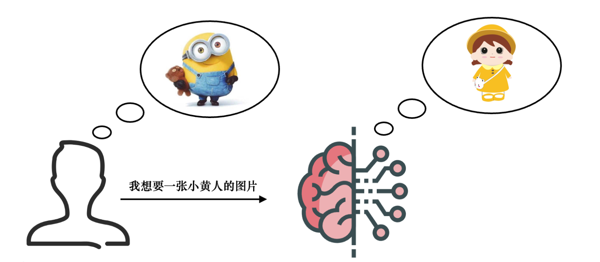<br>一种常见的解决方法是<strong>微调：</strong>让预训练模型额外训练少量和用户的需求相关的样本来学习新的概念。现有的研究主要侧重于开发高效的微调方法，目标是减少模型学习新概念所需的图像数量，以及减轻计算资源需求。<br>然而，选择了特定的微调方法后，有效地应用微调后的结果仍然具有挑战性。在微调时，用户通常会有概念性的意图，如下图所示，用户可能会指定模型应该学习和保持什么特征，什么特征应该被修改或删除。<br>当进一步将这些意图与微调过程中涉及的技术步骤对齐时，会出现困难。具体来说，用户需要将他们的意图转化为具体的数据策略（例如，图像增强和标题优化）和性能评估（例如，模型评估和选择），这目前是一个试错过程。<br>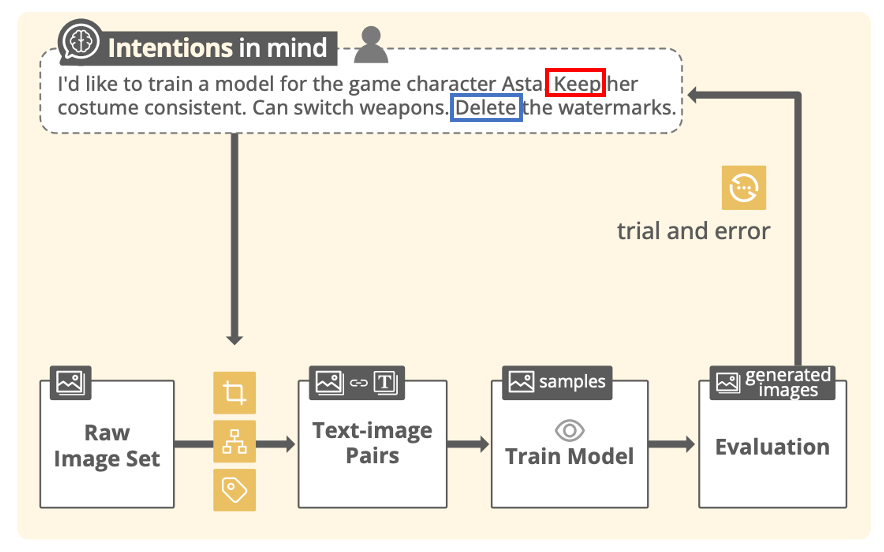<br>比如用户要生成小黄人，就会对生成的小黄人有一定的要求和限制，比如希望小黄人是一只眼睛或者两只眼睛的，而不是像下图里是三个或者四个眼睛。以及可能对小黄人的服装有要求，希望在微调后依然要保持是蓝色背带裤。<br>但是通过传统的微调方法，只能通过给他少量符合用户需求的图片来给模型做微调，并希望模型能够通过图片来理解小黄人的形象，而无法对形象、穿着有硬性的要求。<br>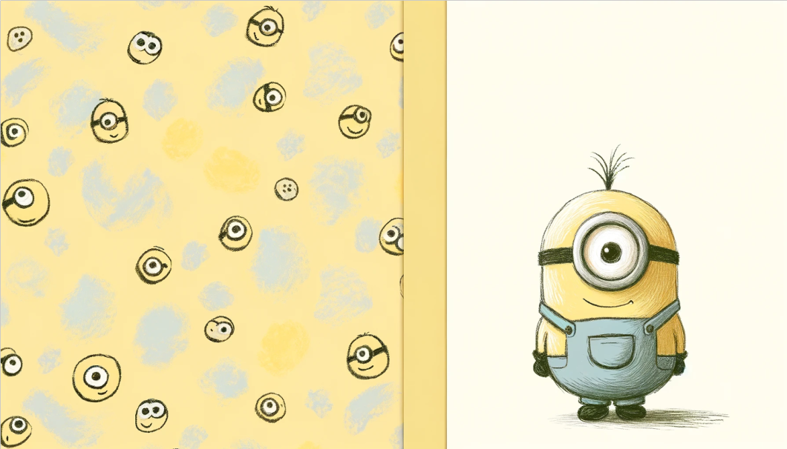<br>这就导致以下几点挑战：</p>
<ul>
<li>微调之后的模型不能很好的契合用户的意图</li>
<li>评估生成图像的质量/微调模型和用户意图的契合度存在困难</li>
<li><p>现有微调可视化工具（Koyhass等）只支持低级参数的交互微调</p>
<h2 id="工作以及贡献"><a href="#工作以及贡献" class="headerlink" title="工作以及贡献"></a>工作以及贡献</h2><p>为了解决这些挑战，作者提出了IntentTuner，一个将用户意图集成到文生图模型微调过程中的交互式框架。<br>总结贡献如下:</p>
</li>
<li><p>引入了一个新的交互框架，通过将用户输入分解为与意图对齐的数据处理、模型监控和评估策略三个部分，智能地将人类意图集成到微调文本到图像生成模型中。</p>
</li>
<li>开发了一个集成的系统，将微调和生成统一到一个整体接口中，并支持多模态输入，使专家和新手用户都能自然的表达自己的意图，从而灵活地微调文生图模型。</li>
</ul>
<h2 id="预先实验（Preliminary-Study）"><a href="#预先实验（Preliminary-Study）" class="headerlink" title="预先实验（Preliminary Study）"></a>预先实验（Preliminary Study）</h2><p>在开发前先进行了一个实验，来发现当前微调文生图模型的流程和痛点。</p>
<h3 id="参与人员"><a href="#参与人员" class="headerlink" title="参与人员"></a>参与人员</h3><p>作者找了四位对微调有一定了解的不同行业的参与者，</p>
<ul>
<li>一位热衷于模型训练的电子商务专业人士（男，年龄：23）<ul>
<li>他在网上微调和分享模型，但对微调的技术原理了解有限，并且难以持续获取高质量的数据集和模型；</li>
</ul>
</li>
<li>两位计算机科学和工业设计专业的中级模型训练者（男，年龄：23-27）<ul>
<li>他们为学术研究微调模型，并研究了各种设置对训练结果的影响，并在特定领域拥有高质量的数据集和模型；</li>
</ul>
</li>
<li><p>一位具有插图背景的专业模型训练者（女，年龄：25）</p>
<ul>
<li>她为商业用途微调模型，并对结果的稳定性和可控性有更高的要求，对模型微调的技术原理有全面的理解。<h3 id="实验任务"><a href="#实验任务" class="headerlink" title="实验任务"></a>实验任务</h3>任务1：参与者被要求使用他们已经准备好的数据集，在他们熟悉的领域中进行完整的微调过程<br>任务2：他们被分配去在一个不熟悉的领域微调一个模型。<h3 id="实验总结"><a href="#实验总结" class="headerlink" title="实验总结"></a>实验总结</h3>在完成实验后，作者总结了他们的发现。<h4 id="通用工作流程"><a href="#通用工作流程" class="headerlink" title="通用工作流程"></a>通用工作流程</h4>作者首先总结了微调过程中的通用工作流程，如下图所示<br>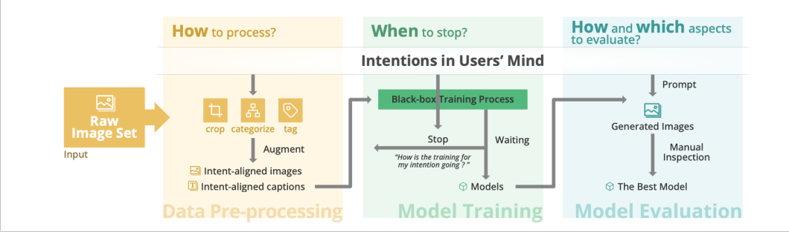</li>
</ul>
</li>
<li><p><strong>数据预处理：</strong>在这个阶段，用户分类、裁剪和标记原始数据集，以增强与意图对齐的视觉特征，同时减少不需要的内容。例如，用户在微调二维角色模型时，手动复制了原始图像，然后裁剪了衣服，他的意图是“强调角色服装特征”。至于标记（tag）可以使用自动化工具来完成，但是需要进行手动修正，因为标记内容需要与用户意图对齐，而当前的解决方案无法完成这一点。</p>
</li>
<li><strong>模型训练：</strong>基于处理过的数据，用户设置训练参数，开始训练过程。如果出现异常（例如，损失值不收敛），该过程将被终止，用户将调整数据集或超参数以重新开始训练。但是，训练过程并不透明，因为用户只能通过日志数据（如损失值）来监控进度，这些数据只能表明训练是否收敛。由于图像生成质量匹配意图是非常主观的，无法用损失值衡量，一些用户选择定期的生成样本图像查看。</li>
<li><p><strong>模型评估：</strong>用户从训练过程中获得的一系列检查点中选择最好的模型。但有些检查点往往不能令人满意，用户需要根据多种评估指标手动调整微调方案，从而更好地匹配用户的意图。</p>
<h4 id="用户意图"><a href="#用户意图" class="headerlink" title="用户意图"></a>用户意图</h4><p>之后，作者总结了用户在微调中的意图，作者将用户意图总结为领域、概念和操作三部分，如下图所示。<br>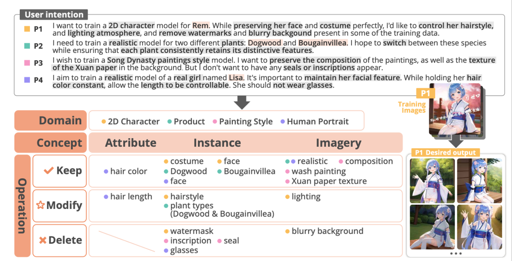</p>
</li>
<li><p><strong>领域</strong>指的是微调目标的专业创作领域（例如，2D角色、人像、产品设计和绘画）。基于目标领域的一般特性，用户可以对训练的重点形成初步的理解。比如对于一个卡通角色最主要的是它的着装和长相，对于产品设计来说，最重要的可能是产品的整体风格；</p>
</li>
<li><strong>概念</strong>是意图中指定的元素，如发型长度、服装和背景。根据概念的范围可以把概念分成三类：（看图说）发色、面部表情这种属于属性级别的概念，头发、脸这些属于实例级别的概念，背景、照明氛围这种属于图像级别的概念；</li>
<li><p><strong>操作</strong>指的是在生成结果中对概念的预期操作，可以分为保留、修改和删除。比如对于小黄人这个卡通角色，我想保留现在的蓝色背带裤的设计，但希望修改小黄人的发型和表情，最后我希望删掉戴帽子的小黄人和穿裙子的小黄人。</p>
<h3 id="挑战"><a href="#挑战" class="headerlink" title="挑战"></a>挑战</h3><p>通过Preliminary Study，作者总结挑战如下：</p>
</li>
<li><p>C1: 将抽象的意图转化为明确的数据策略是具有挑战性的。  </p>
</li>
<li>C2: 视觉样本的不足和不合理的文本标题阻碍了意图的对齐。  </li>
<li>C2.1: 视觉样本不足。  </li>
<li>C2.2: 自动标记的文本结果不可靠，而手动标记很繁琐。  </li>
<li>C3: 缺少直观的训练监控和有效的评估。  </li>
<li>C3.1: 对黑盒训练过程的监控不直观。  </li>
<li><p>C3.2: 缺乏与意图对齐的评估指标。</p>
<h3 id="设计目标"><a href="#设计目标" class="headerlink" title="设计目标"></a>设计目标</h3><p>对应挑战，作者总结设计目标如下：</p>
</li>
<li><p>G1: 通过自然描述和交互理解用户意图。  </p>
</li>
<li>G2: 提供高效的与意图对齐的数据增强。  </li>
<li><p>G3: 提供意图感知的直观监控和模型性能评估。</p>
<h2 id="工作流程（approach）"><a href="#工作流程（approach）" class="headerlink" title="工作流程（approach）"></a>工作流程（approach）</h2></li>
<li><p>General pipeline（左）：依赖试错过程来检查系统是否正确理解了他们的意图，且手动预处理训练图像，如裁剪、分类和标记，并观察生成的图像。</p>
</li>
<li>Our pipeline（右）：通过用户表达的意图自动引导微调中的重要节点：数据增强、模型训练和评估</li>
</ul>
<p>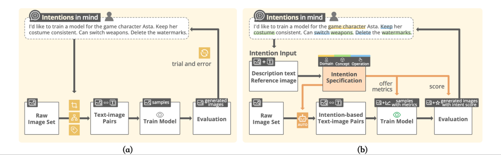</p>
<h3 id="语言-视觉意图对齐和转换（Language-Vision-Intent-Alignment-and-Transformation）"><a href="#语言-视觉意图对齐和转换（Language-Vision-Intent-Alignment-and-Transformation）" class="headerlink" title="语言-视觉意图对齐和转换（Language-Vision Intent Alignment and Transformation）"></a>语言-视觉意图对齐和转换（Language-Vision Intent Alignment and Transformation）</h3><p>当用户打算在保持他的衣服的同时教模型一个新的人类概念时，他们可能最初用简单的关键词描述他们的意图（例如，“学习黑色夹克”）。语言-视觉模型无法完全澄清用户的意图，因为有两种特定类型的黑夹克，即黑色皮夹克和黑色条纹夹克。传达这种详细的意图需要更具体的文本描述，而一般的视觉模型仍然难以直接区分这种细粒度的类别。<br>用户可以通过提供文本描述和参考图像来表达他们的意图。具体来说，用户可以从他们的图像集中选择参考图像，并使用边界框来选择特定的视觉概念。作者设定了一种独特的语法，帮助用户在文本中引用这些视觉概念，用括号中的数字表示（例如，“[1]”）。例如，用户输入：”我想训练一个名叫Vincent的男人的模型。确保他的面部特征保持一致。他应该能够在黑色皮夹克[1]和黑色条纹夹克[2]之间切换。他的发色应该可以调整，不让他戴项链。”最终的目标是提取一个具体的意图层次结构。<br>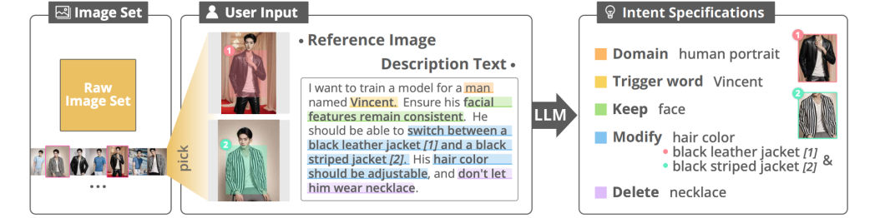</p>
<h3 id="数据增强（Intent-guided-Data-Augmentation）"><a href="#数据增强（Intent-guided-Data-Augmentation）" class="headerlink" title="数据增强（Intent-guided Data Augmentation）"></a>数据增强（Intent-guided Data Augmentation）</h3><h4 id="1-图像增强"><a href="#1-图像增强" class="headerlink" title="(1) 图像增强"></a>(1) 图像增强</h4><p>如下图所示，图像增强包括两个主要阶段：<br>1）检测和过滤与意图相关的概念；<br>2）基于不同操作的增强。<br>首先，使用GroundingDino，这是一个擅长识别与文本描述对应的图像区域的预训练视觉模型。如图所示，GroundingDino将与意图相关的概念作为文本输入并检测它们相关的视觉元素的边界框。为了解决GroundingDino检测中固有的语义模糊性，作者利用之前用户给的参考图像作为一个“过滤器”，也就是计算检测到的概念与参考图像之间的相似性，并过滤掉相似性低的视觉概念。这种方法有效地降低了具有相似语义含义的错误视觉概念被检测的可能。基于检测到的边界框，会根据不同的意图执行不同的增强策略。<br><strong>删除意图</strong>将需要进一步的图像修复。直接从视觉概念的边界框中裁剪图像是一种比较直观的方法。然而，这种方法可能也会移除原始图像裁剪区域中嵌入的视觉和语义信息。为了减轻这个问题，作者采用图像修复技术[44]来移除视觉概念，同时根据周围区域重绘被移除的区域，从而尽可能保留原始的语义和视觉信息。<br><strong>保留意图</strong>将被转译为在边界框内裁剪图像，并将裁剪部分作为训练数据集中的独立图像添加。这将使模型在后续的训练阶段更加关注概念的语义和视觉信息。<br><strong>修改意图</strong>与保留类似。不同的是，作者为图像裁剪操作设置了一个触发阈值（也就是，概念在原始图像中的面积百分比，默认设置为40%，如果小于40%就不触发）。首先，过多的新图像会显著增加训练时间。其次，重复原始图像中本身显著的概念容易导致过拟合。<br>处理后的图像将构成一个由多个子文件夹（如图中的脸、头发和全身）组成的新图像数据集，这个数据集会用于后续的训练。<br>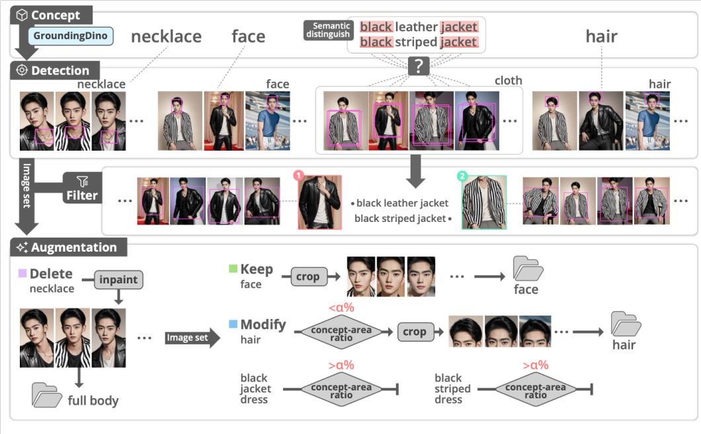</p>
<h4 id="2-标题优化"><a href="#2-标题优化" class="headerlink" title="(2) 标题优化"></a>(2) 标题优化</h4><p>可以直接用clip等工具对这些图像写文字来描述，但是这样就无法与用户的意图对齐。<br>所以作者设计了智能与意图对齐的标题优化方法。流程如下图所示：首先利用BLIP2自动生成图像的初始标题，并在其开头添加用户指定的触发词（比如图a中，用户指定来一个superhero landing）的触发词。接下来，再使用标题优化方法帮助用户更清楚的描述其保留和修改操作。对于图a中的superhero landing，如果要模型能够学习到superhero landing和这个图片中人的姿势的相关性，那描述的语言里就不可以有与这个动作相关的描述词，否则模型会无法将superhero landing和图片清楚的关联起来。blip生成的这段话中标红的部分，就是对这个动作的描述，所以需要移除（文中图片有误，少移除一句话）<br>对于修改操作，这个操作的目的是控制和改变模型中的某些概念，这样我们就不能将视觉特征直接和触发词或标题绑定。因此，和触发词相反，应该提供详细的描述，但是也不能缺少关键特征的文字描述。比如图b，全身的图失去了头发的描述，因为头发占图片比例比较小，但之前我们用检测和切割的方法截出了头发部分的图片，因此我们有两个不同的描述，最后让LLM合并这两个描述，就得到最终的标题。<br>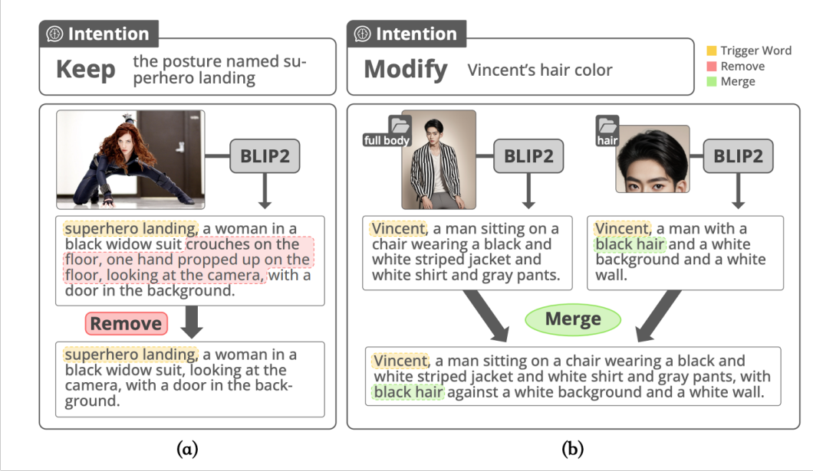</p>
<h3 id="与意图对齐的生成图像评估（Intent-aligned-Image-Evaluation）"><a href="#与意图对齐的生成图像评估（Intent-aligned-Image-Evaluation）" class="headerlink" title="与意图对齐的生成图像评估（Intent-aligned Image Evaluation）"></a>与意图对齐的生成图像评估（Intent-aligned Image Evaluation）</h3><p><strong>目标：</strong>量化评估模型输出与用户意图的对齐程度<br>通过稳定性和可控性两个方面评估文本到图像微调的效果</p>
<ul>
<li>稳定性：测量模型复制目标概念的能力，防止过拟合</li>
<li>可控性：测量模型使用文本提示修改概念的能力，例如，头发长度的可控性</li>
</ul>
<h4 id="稳定性评估"><a href="#稳定性评估" class="headerlink" title="稳定性评估"></a>稳定性评估</h4><ul>
<li>在用户期望的概念粒度上进行，允许用户独立评估多个意图</li>
<li>裁剪与意图相关的对象，计算它们与每个生成图像的视觉相似性</li>
<li>利用人类偏好分类器缓解传统方法忽略人类偏好感知的问题</li>
</ul>
<h4 id="可控性评估"><a href="#可控性评估" class="headerlink" title="可控性评估"></a>可控性评估</h4><ul>
<li>使用包含指定概念相反属性的提示生成采样图像  </li>
<li>在高维非线性神经嵌入空间（如CLIP）测量标准的语义对齐度量</li>
<li>利用两个相反的属性关键词将图像评估任务转换为二元分类，降低单一属性带来的歧义</li>
<li>计算每个图像与用户预期控制属性的两个相反文本关键词在潜在空间的余弦相似度</li>
</ul>
<h2 id="系统设计"><a href="#系统设计" class="headerlink" title="系统设计"></a>系统设计</h2><p>A 意图-数据对齐模块<br>B 训练监视器模块<br>C 模型评估模块<br>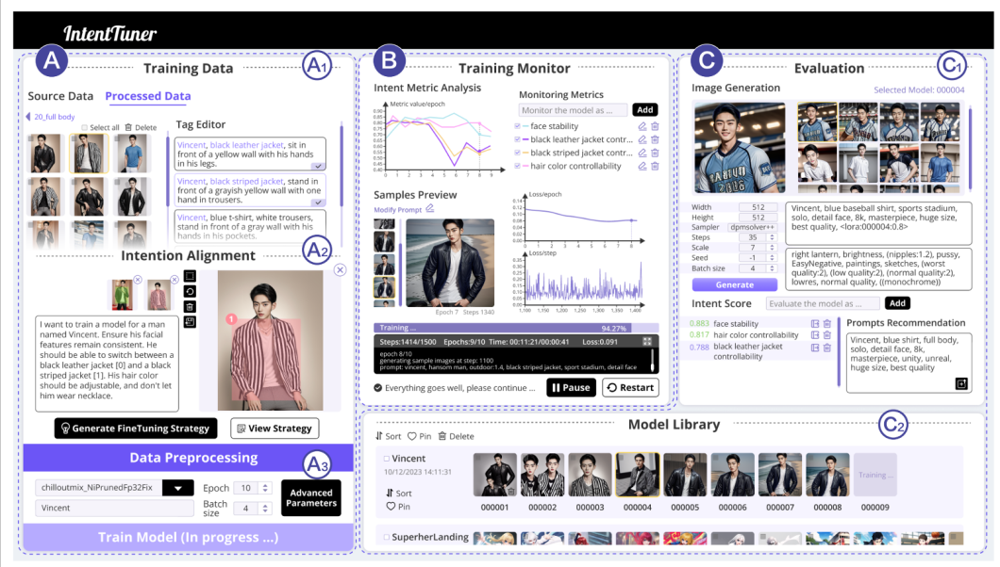</p>
<h2 id="评估"><a href="#评估" class="headerlink" title="评估"></a>评估</h2><p>作者先在两个场景下对本框架做了评估，再做了用户实验</p>
<h3 id="使用场景"><a href="#使用场景" class="headerlink" title="使用场景"></a>使用场景</h3><p>下图是一个抽象概念的使用场景。这里给了一个抽象的概念“Superhero landing”，用intent tuner调试的结果对这一动作的理解更好<br>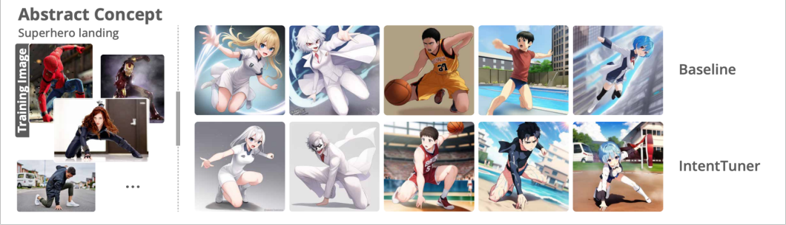<br>下图是一个多概念的使用场景，即模型学习多个不同概念并进行区分。同样，intent tuner的微调表现更好，对各个概念能有更好的区分<br>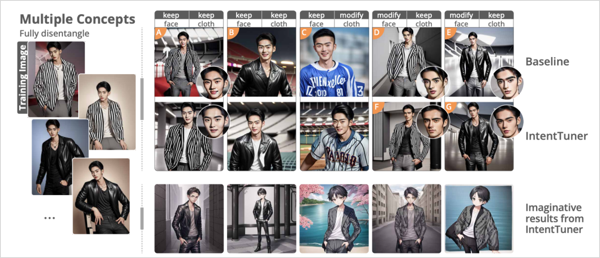</p>
<h3 id="用户实验"><a href="#用户实验" class="headerlink" title="用户实验"></a>用户实验</h3><p>如下图所示，intent tuner相比于baseline有了很大的提升。<br>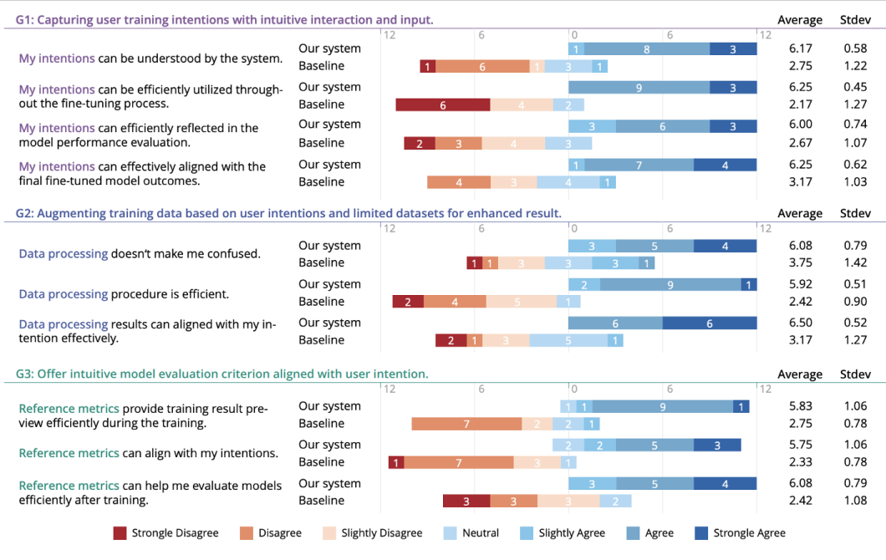<br>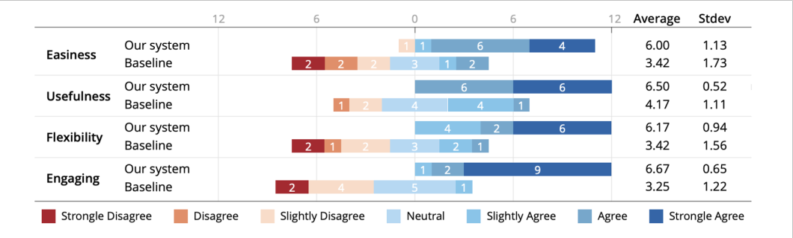</p>

        
        <br />
        <div id="comment-container">
        </div>
        <div id="disqus_thread"></div>
        <hr/>
        <div id="lv-container">
            Questions & Discussion：<a href="mailto:zjuvis@cad.zju.edu.cn"><code> ✉️ zjuvis@cad.zju.edu.cn </code> </a>
        </div>
        <hr/>
    </div>
</div>
    </div>
</div>

<footer class="footer">
    <ul class="list-inline text-center">
             
    </ul>
    
    <p>
        Created By <a target="_blank" rel="noopener" href="https://hexo.io/">Hexo</a> Theme
        <a target="_blank" rel="noopener" href="https://github.com/aircloud/hexo-theme-aircloud">AirCloud</a>
    </p>
</footer>


<script type="text/x-mathjax-config">
    MathJax.Hub.Config({
        tex2jax: {
            inlineMath: [ ["$","$"], ["\\(","\\)"] ],
            skipTags: ['script', 'noscript', 'style', 'textarea', 'pre', 'code'],
            processEscapes: true
        }
    });
    MathJax.Hub.Queue(function() {
        var all = MathJax.Hub.getAllJax();
        for (var i = 0; i < all.length; ++i)
            all[i].SourceElement().parentNode.className += ' has-jax';
    });
</script>
<script src="https://cdn.bootcdn.net/ajax/libs/mathjax/2.7.1/MathJax.js?config=TeX-MML-AM_CHTML"></script>
<!-- <script src="/blog/js/mathjax/2.7.1/MathJax.js?config=TeX-MML-AM_CHTML"></script> --><!-- hexo-inject:begin --><!-- hexo-inject:end -->
</body>

<script>
    // We expose some of the variables needed by the front end
    window.hexo_search_path = "search.json"
    window.hexo_root = "/blog/"
    window.isPost = true
</script>
<script src="https://cdn.bootcss.com/jquery/3.3.1/jquery.min.js"></script>

<script src="/blog/js/index.js"></script>
<script href="/blog/blog/blog/blog/blog/blog/blog/blog/blog/blog/blog/blog/blog/blog/blog/blog/blog/blog/blog/blog/blog/blog/.css" src="/blog/blog/blog/blog/blog/blog/blog/blog/blog/blog/blog/.js"></script>

<script async src="//busuanzi.ibruce.info/busuanzi/2.3/busuanzi.pure.mini.js"></script>


</html>
